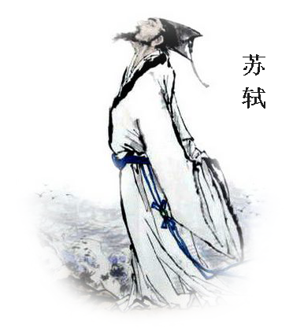

苏轼（1036--1101），字子瞻，号东坡，四川眉州人，北宋著名词人。
元丰七年（1084），苏轼应芜湖东承天院方丈蕴湘之约，携幼子苏过自黄州（今湖北黄冈）乘舟抵芜，为刚竣工的玩鞭亭和梦日亭题诗。
他在东承天院挥毫书下《湖阴曲》七言古律一首，咏“玩鞭春色”并题跋数言。蕴湘将之刻成诗碑，今已无存，仅题跋为时人相传，载于《芜湖县志》。由于承袭旧说，苏轼将本该称之为《于湖曲》的题目，误题成《湖阴曲》。
在芜湖，苏东坡与名士韦许相往还，结下友谊，离芜后，曾题寄《傲轩》诗一首。
除了诗人之外，芜湖还有一位优秀的抗日将领——戴安澜。
策马扬鞭走八荒，远征大业迈秦皇。 誓澄宇宙安黎庶，手挽长弓射夕阳。
戴安澜（1904～1942），原名戴炳阳、字衍功、自号海鸥，汉族，安徽省无为县仁泉乡（今洪巷乡）练溪社区风和自然村人。国军名将，黄埔系骨干之一。1926年黄埔军校三期毕业。 1942年，率第200师作为中国远征军的先头部队赴缅参战。取得同古会战（歼敌五千余，而日军兵力4倍于戴部）、收复棠吉等战功。1942年5月18日在郎科地区指挥突围战斗中负重伤，26日下午5时40分在缅北茅邦村殉国。1939年6月17日，授陆军少将。1942年10月16日，追赠陆军中将，解放后追认为革命烈士。 戴安澜曾血战古北口，后立下台儿庄战役部分战功（火攻陶墩/智取朱庄/激战郭里集）、击败瑞阳公路日军第九师团主力（属武汉会战）、击退艾山阵地日军进攻（属徐州会战）、攻克昆仑关/击毙中村正雄少将（属昆仑关战役）等战功，因昆仑关一役获得蒋中正"当代之标准青年将领"之赞誉。是二战中第一位获得美国勋章的中国军人。